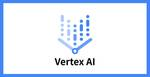
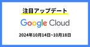
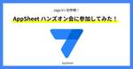
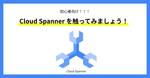
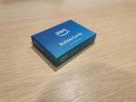

NHN テコラス Tech Blog | AWS、機械学習、IoTなどの技術ブログ
https://techblog.nhn-techorus.com
NHN テコラス株式会社が、AWSを中心としたクラウドインフラやオンプレミス、ビッグデータ、機械学習などの技術ネタを中心にご紹介するブログです。 現場のエンジニアやデータサイエンティストが同じ仕事に携わる方にとって便利なものや知りたいであろう情報を提供することを目的としています
フィード
軽音楽同好会を設立しました！【第一回活動レポート】
NHN テコラス Tech Blog | AWS、機械学習、IoTなどの技術ブログ
はじめに こんにちは、フクナガです。 これまで技術系や登壇の感想系ブログが多かったのですが、会社の社風や風通しが伝わるようなブログも書いていきたいと思います！ 今回のテーマは、「軽音楽同好会」です！ 社会人になってから会社でサークルを立ち上...続きを読む軽音楽同好会を設立しました！【第一回活動レポート】 first appeared on NHN テコラス Tech Blog | AWS、機械学習、IoTなどの技術ブログ.
15時間前

【生成 AI セキュリティ】Prompt Guard を Google Cloud 上にデプロイしてみた
NHN テコラス Tech Blog | AWS、機械学習、IoTなどの技術ブログ
はじめに こんにちは、フクナガです。 先日の Shun さんの Google Cloud アップデートブログを読んで、2つのモデルが Vertex AI の Model Garden に追加されたと知りました。 Model Garden に...続きを読む【生成 AI セキュリティ】Prompt Guard を Google Cloud 上にデプロイしてみた first appeared on NHN テコラス Tech Blog | AWS、機械学習、IoTなどの技術ブログ.
2日前
【参加レポート】GWS Meetup#6 Google Workspace スキルアップ Meetup!!チャレンジPWA！
NHN テコラス Tech Blog | AWS、機械学習、IoTなどの技術ブログ
はじめに こんにちは、Shunです！ 先日に続き、Jagu’e’r の GWS 分科会が主催されていた「GWS Meetup#6 Google Workspace スキルアップ Meetup!!チャレンジPWA！」へ...続きを読む【参加レポート】GWS Meetup#6 Google Workspace スキルアップ Meetup!!チャレンジPWA！ first appeared on NHN テコラス Tech Blog | AWS、機械学習、IoTなどの技術ブログ.
3日前

Google Cloud 注目アップデート 2024年10月14日~10月18日
NHN テコラス Tech Blog | AWS、機械学習、IoTなどの技術ブログ
2024年10月14日~10月18日の Google Cloud の注目アップデートをご紹介します。 本記事のアップデート情報は Google Cloud リリースノートを参照しております。 サマリ 先週のアップデートでは Cloud Sp...続きを読むGoogle Cloud 注目アップデート 2024年10月14日~10月18日 first appeared on NHN テコラス Tech Blog | AWS、機械学習、IoTなどの技術ブログ.
3日前

【Jagu’e’r 初参戦！】AppSheet ハンズオン会に参加してみた！
NHN テコラス Tech Blog | AWS、機械学習、IoTなどの技術ブログ
はじめに こんにちは、Shun です！ 今回は、Google Cloud 公式ユーザー会の Jagu’e’r （ジャガー）の文科会に参加してきました！ Jagu’e’r は、AWS の JAW...続きを読む【Jagu’e’r 初参戦！】AppSheet ハンズオン会に参加してみた！ first appeared on NHN テコラス Tech Blog | AWS、機械学習、IoTなどの技術ブログ.
4日前
NHN アトリエのジムを使ってみた！！！
NHN テコラス Tech Blog | AWS、機械学習、IoTなどの技術ブログ
はじめに こんにちは、Shunです！ 弊社のオフィスがあるNHN アトリエビルにあるトレーニングジムを使って見たので、その感想を紹介します！ 自社ビルならぬ、自社ジムです！ では、早速トレーニングをしていきましょう！！ 今日は背中の日 懸垂...続きを読むNHN アトリエのジムを使ってみた！！！ first appeared on NHN テコラス Tech Blog | AWS、機械学習、IoTなどの技術ブログ.
4日前

【初心者向け】Cloud Spanner を触ってみましょう！
NHN テコラス Tech Blog | AWS、機械学習、IoTなどの技術ブログ
はじめに こんにちは、Koo です。 今回の記事では、Google Cloud が提供しているデータベースである Cloud Spanner をご紹介します。 私も最近 Cloud Spanner を知ったばかりですが、このサービスの特徴と...続きを読む【初心者向け】Cloud Spanner を触ってみましょう！ first appeared on NHN テコラス Tech Blog | AWS、機械学習、IoTなどの技術ブログ.
4日前
日経クロステックNEXT 東京 2024 にて「クラウドサービスで実現する生成AIの安全な運用とセキュリティ対策」というテーマで登壇しました。
NHN テコラス Tech Blog | AWS、機械学習、IoTなどの技術ブログ
はじめに こんにちは、フクナガです。 10月10日（木）、10月11日（金）に開催された「日経クロステックNEXT 東京 2024」にて、登壇の機会をいただきました。 AWSの生成AI、セキュリティをテーマに15分枠で登壇をさせていただいた...続きを読む日経クロステックNEXT 東京 2024 にて「クラウドサービスで実現する生成AIの安全な運用とセキュリティ対策」というテーマで登壇しました。 first appeared on NHN テコラス Tech Blog | AWS、機械学習、IoTなどの技術ブログ.
7日前

社外の方を招いて、AWS BuilderCardsを使った交流会を主催した話 1
1
NHN テコラス Tech Blog | AWS、機械学習、IoTなどの技術ブログ
はじめに こんにちは、YUJIです。 今回は、普段働いているオフィスの1Fカフェスペースを使って 社外のエンジニアの方を数人招いて、AWS BuilderCardsを使った交流会を実施してみたので、そのレポートです！ AWS Builder...続きを読む社外の方を招いて、AWS BuilderCardsを使った交流会を主催した話 first appeared on NHN テコラス Tech Blog | AWS、機械学習、IoTなどの技術ブログ.
7日前
Console to Code が一般提供開始されたので触ってみた！
NHN テコラス Tech Blog | AWS、機械学習、IoTなどの技術ブログ
はじめに こんにちは、Paseri です！ 2024年10月10日から Amazon Q Developer を利用した Console to Code の一般提供が開始されました！ 本記事ではサービスの特徴や利点、注意する点などをご紹介で...続きを読むConsole to Code が一般提供開始されたので触ってみた！ first appeared on NHN テコラス Tech Blog | AWS、機械学習、IoTなどの技術ブログ.
7日前